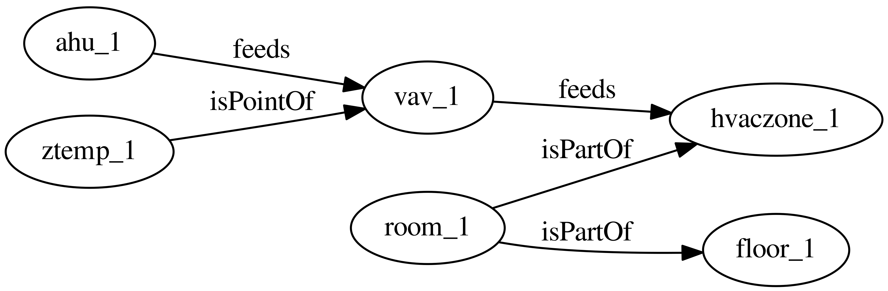

Making a Brick Model
Here we review the construction and Brick representation of a small example building.
Data Model
Brick can be thought of as a vocabulary for describing the things in the building and how they relate to each other.
In Brick, names for things are referred to as tagsets and names for how these things are connected are called relationships.
For example, an instance of a VAV would have a feeds relationship with an HVAC_Zone.
The Brick vocabulary and class structure are available at brickschema.org. The best way to view the file is either using the Protege tool or Python’s rdflib library.
RDF Triples
To use these names to describe a building, we construct tuples consisting following the form of:
|
|
where subject and object are both tagsets and predicate is a relationship. This is known as an RDF triple, which we will abbreviate to “triple”.
Each triple represents 2 nodes (the subject and object) connected with a directed edge (the predicate):

A collection of triples describing a building thus create what we call the “building graph”.
When we write down a subject, predicate or object, we refer to it in terms of its namespace.
The Brick class namespace is http://brickschema.org/ttl/Brick.ttl#, the RDF namespace is https://www.w3.org/1999/02/22-rdf-syntax-ns#, etc.
The concatenation of a subject/predicate/object and its namespace forms a URI.
For example, the VAV Brick class has the URI http://brickschema.org/ttl/Brick.ttl#VAV.
Using prefix declarations, we can define a shortcut for the long namespaces; in Turtle files (described below), a prefix declaration takes the form of
|
|
This defines the prefix bf to be used instead of the full namespace. We can now write the URI http://brickschema.org/ttl/BrickFrame.ttl#feeds as bf:feeds. These tend to be consistent so as not to cause confusion. Here’s the set of abbreviations used in and by Brick:
| Prefix | Namespace |
|---|---|
bf |
http://brickschema.org/ttl/BrickFrame |
brick |
http://brickschema.org/ttl/Brick |
rdf |
http://www.w3.org/1999/02/22-rdf-syntax-ns |
rdfs |
http://www.w3.org/2000/01/rdf-schema |
owl |
http://www.w3.org/2002/07/owl |
xml |
http://www.w3.org/XML/1998/namespace |
skos |
http://www.w3.org/2004/02/skos/core |
xsd |
http://www.w3.org/2001/XMLSchema |
tag |
http://brickschema.org/ttl/BrickTag |
When forming the set of triples that constitute the Brick representation of a building, we use relationships defined by the Brick vocabulary as well as a few standard relationships, namely the rdf:type (which instantiates Brick classes) and rdfs:subClassOf which allows traversal of the class structure and creation of new subclasses.
Example Building
Our example building contains the following components:
- one floor (
floor_1) - one room on the floor (
room_1) - one HVAC zone, containing the one room (
hvaczone_1) - one zone temperature sensor in the room (
ztemp_1) - one VAV supplying the HVAC zone (
vav_1) - one AHU supplying the VAV (
ahu_1)
The Brick model of these relationships will be the triples representing the following graph

Missing from this representation are the instantiations of Brick classes; we need to declare that floor is of type brick:Floor and so on. This uses the rdf:type relationship.

This graph would be defined by this set of triples:
mybuilding:ahu_1 rdf:type brick:AHU
mybuilding:room_1 rdf:type brick:Room
mybuilding:ztemp_1 rdf:type brick:Zone_Temperature_Sensor
mybuilding:floor_1 rdf:type brick:Floor
mybuilding:hvaczone_1 rdf:type brick:HVAC_Zone
mybuilding:vav_1 rdf:type brick:VAV
mybuilding:ahu_1 bf:feeds mybuilding:vav_1
mybuilding:room_1 bf:isPartOf mybuilding:floor_1
mybuilding:room_1 bf:isPartOf mybuilding:hvaczone_1
mybuilding:ztemp_1 bf:isPointOf mybuilding:vav_1
mybuilding:vav_1 bf:feeds mybuilding:hvaczone_1
Note that we are using a distinct prefix to “store” the names of the entities that are actually in our building.
Triples are usually stored in a self-contained file in the Turtle format, which usually has the filename suffix .ttl. Here’s the Turtle file for the example building:
|
|
Creating the Example Building
“Creating” the Brick model for a building consists of making the Turtle containing the triples that describe the building. While possible to create by hand, for larger buildings it makes more sense to automate this process.
We use Python’s rdflib to create this file.
|
|
Real-world examples of this kind of code for some real buildings can be found here